This tutorial will cover how to implement a fire shader in OpenGL 4.0 using GLSL and C++.
The code in this tutorial is based on the previous tutorials.
One of the most realistic ways to create a fire effect in OpenGL is to use a noise texture and to perturb the sampling of that texture in the same way we have for water, glass, and ice.
The only major difference is in the manipulation of the noise texture and the specific way we perturb the texture coordinates.
First start with a grey scale noise texture such as follows:
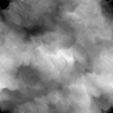
These noise textures can be procedurally generated with several different graphics manipulation programs.
The key is to produce one that has noise properties specific to a good-looking fire.
The second texture needed for fire effect will be a texture composed of fire colored noise and a flame outline.
For example, the following texture is composed of a texture that uses Perlin noise with fire colors and a texture of a small flame.
If you look closely at the middle bottom part of the texture you can see the umbra and penumbra of the flame:
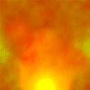
And finally, you will need an alpha texture for transparency of the flame so that the final shape is very close to that of a small flame.
This can be rough as the perturbation will take care of making it take shape of a good flame:
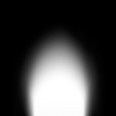
Now that we have the three textures required for the fire effect, we can explain how the shader works.
The first thing we do is take the noise texture and create three separate textures from it.
The three separate textures are all based on the original noise texture except that they are scaled differently.
These scales are called octaves as they are simply repeated tiles of the original noise texture to create numerous more detailed noise textures.
The following three noise textures are scaled (tiled) by 1, 2, and 3:
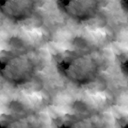
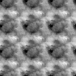
We are also going to scroll all three noise textures upwards to create an upward moving noise which will correlate with a fire that burns upwards.
The scroll speed will be set differently for all three so that each moves at a different rate.
We will eventually combine the three noise textures so having them move at different rates adds dimension to the fire.
The next step is to convert the three noise textures from the (0, 1) range into the (-1, +1) range.
This has the effect of removing some of the noise and creating noise that looks closer to fire.
For example, the first noise texture now looks like the following:
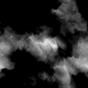
With all three noise textures in the (-1, +1) range we can now add distortion to each texture along the x and y coordinates.
The distortion modifies the noise textures by scaling down the noise similar to how the refraction scale in the water, glass, and ice shaders did so.
Once each noise texture is distorted, we can then combine all three noise textures to produce a final noise texture.
Note that the distortion here is only applied to the x and y coordinates since we will be using them as a look up table for the x and y texture sampling just like we do with normal maps.
The z coordinate is ignored as it has no use when sampling textures in 2D.
Remember also that each frame the three noise textures are scrolling upwards at different rates so combining them creates an almost organized flowing noise that looks like fire.
Now the next very important step is to perturb the original fire color texture.
In other shaders such as water, glass, and ice we usually use a normal map at this point to perturb the texture sampling coordinates.
However, in fire we use the noise as our perturbed texture sampling coordinates.
But before we do that, we want to also perturb the noise itself.
We will use a distortion scale and bias to distort the noise higher at the top of the texture and less at the bottom of the texture to create a solid flame at the base and flame licks at the top.
In other words, we perturb the noise along the Y axis using an increased amount of distortion as we go up the noise texture from the bottom.
We now use the perturbed final noise texture as our look up table for texture sampling coordinates that will be used to sample the fire color texture.
Note that we use GL_CLAMP_TO_EDGE instead of GL_REPEAT for the fire color texture wrapping, otherwise we will get flame licks wrapping around to the bottom which would ruin the look.
The fire color texture sampled using the perturbed noise now looks like the following:
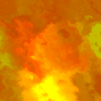
Now that we have an animated burning square that looks fairly realistic, we need a way of shaping it into more of a flame.
To do so we turn on blending and use the alpha texture we created earlier.
The trick is to sample the alpha texture using the same perturbed noise to make the alpha look like a burning flame.
We also need to use GL_CLAMP_TO_EDGE instead of GL_REPEAT for the wrap sampling to prevent the flames from wrapping around to the bottom.
When we do so we get the following result from the sampled perturbed alpha:
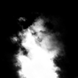
To complete the effect, we set the perturbed alpha value to be the alpha channel of the perturbed fire color texture and the blending takes care of the rest:
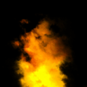
When you see this effect animated it looks incredibly realistic.
Framework
The framework has one new class called FireShaderClass which is just the TextureShaderClass updated for the fire effect.
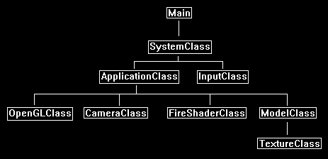
We will start the code section by examining the GLSL fire shader.
Fire.vs
////////////////////////////////////////////////////////////////////////////////
// Filename: fire.vs
////////////////////////////////////////////////////////////////////////////////
#version 400
/////////////////////
// INPUT VARIABLES //
/////////////////////
in vec3 inputPosition;
in vec2 inputTexCoord;
in vec3 inputNormal;
//////////////////////
// OUTPUT VARIABLES //
//////////////////////
out vec2 texCoord;
The output from this vertex shader will send an additional three texture coordinates to the pixel shader.
We will use these coordinates for sampling the same noise texture in three different ways to basically create three different noise textures from one.
out vec2 texCoords1;
out vec2 texCoords2;
out vec2 texCoords3;
///////////////////////
// UNIFORM VARIABLES //
///////////////////////
uniform mat4 worldMatrix;
uniform mat4 viewMatrix;
uniform mat4 projectionMatrix;
There are three new uniform variable inputs to the fire vertex shader.
The first variable called frameTime is updated each frame so the shader has access to an incremental time that is used for scrolling the different noise textures.
The second variable scrollSpeeds is a 3-float array that contains three different scrolling speeds.
The x value is the scroll speed for the first noise texture.
The y value is the scroll speed for the second noise texture.
And the z value is the scroll speed for the third noise texture.
The third variable scales are a 3-float array that contains three different scales (or octaves) for the three different noise textures.
The x, y, and z values of scales is generally set to 1, 2, and 3.
This will make the first noise texture a single tile.
It also makes the second noise texture tiled twice in both directions.
And finally, it makes the third noise texture tiled three times in both directions.
uniform float frameTime;
uniform vec3 scrollSpeeds;
uniform vec3 scales;
////////////////////////////////////////////////////////////////////////////////
// Vertex Shader
////////////////////////////////////////////////////////////////////////////////
void main(void)
{
// Calculate the position of the vertex against the world, view, and projection matrices.
gl_Position = vec4(inputPosition, 1.0f) * worldMatrix;
gl_Position = gl_Position * viewMatrix;
gl_Position = gl_Position * projectionMatrix;
// Store the texture coordinates for the pixel shader.
texCoord = inputTexCoord;
Here is where we create three different texture sampling values so that the same noise texture can be used to create three different noise textures.
For each texture coordinate we first scale it by the scale value which then tiles the texture a number of times depending on the value in the scales array.
After that we scroll the three different y coordinates upwards using the frame time and the value in the scrollSpeeds array.
The scroll speed for all three will be different which gives the fire dimension.
// Compute texture coordinates for first noise texture using the first scale and upward scrolling speed values.
texCoords1 = (inputTexCoord * scales.x);
texCoords1.y = texCoords1.y - (frameTime * scrollSpeeds.x);
// Compute texture coordinates for second noise texture using the second scale and upward scrolling speed values.
texCoords2 = (inputTexCoord * scales.y);
texCoords2.y = texCoords2.y - (frameTime * scrollSpeeds.y);
// Compute texture coordinates for third noise texture using the third scale and upward scrolling speed values.
texCoords3 = (inputTexCoord * scales.z);
texCoords3.y = texCoords3.y - (frameTime * scrollSpeeds.z);
}
Fire.ps
////////////////////////////////////////////////////////////////////////////////
// Filename: fire.ps
////////////////////////////////////////////////////////////////////////////////
#version 400
/////////////////////
// INPUT VARIABLES //
/////////////////////
in vec2 texCoord;
in vec2 texCoords1;
in vec2 texCoords2;
in vec2 texCoords3;
//////////////////////
// OUTPUT VARIABLES //
//////////////////////
out vec4 outputColor;
///////////////////////
// UNIFORM VARIABLES //
///////////////////////
The three textures for the fire effect are the fire color texture, the noise texture, and the alpha texture.
uniform sampler2D fireTexture;
uniform sampler2D noiseTexture;
uniform sampler2D alphaTexture;
The three distortion arrays contain a x and y value for distorting the three different noise textures by individual x and y parameters.
The distortion scale and bias uniform variables are used for perturbing the final combined noise texture to make it take the shape of a flame.
uniform vec2 distortion1;
uniform vec2 distortion2;
uniform vec2 distortion3;
uniform float distortionScale;
uniform float distortionBias;
////////////////////////////////////////////////////////////////////////////////
// Pixel Shader
////////////////////////////////////////////////////////////////////////////////
void main(void)
{
vec4 noise1;
vec4 noise2;
vec4 noise3;
vec4 finalNoise;
float perturb;
vec2 noiseCoords;
vec4 fireColor;
vec4 alphaColor;
First create three different noise values by sampling the noise texture three different ways.
Afterward move the texture pixel value into the (-1, +1) range.
// Sample the same noise texture using the three different texture coordinates to get three different noise scales.
noise1 = texture(noiseTexture, texCoords1);
noise2 = texture(noiseTexture, texCoords2);
noise3 = texture(noiseTexture, texCoords3);
// Move the noise from the (0, 1) range to the (-1, +1) range.
noise1 = (noise1 - 0.5f) * 2.0f;
noise2 = (noise2 - 0.5f) * 2.0f;
noise3 = (noise3 - 0.5f) * 2.0f;
Now scale down the x and y sampling coordinates by the distortion amount.
After they are distorted all three texture values are combined into a single value which represents the final noise value for this pixel.
// Distort the three noise x and y coordinates by the three different distortion x and y values.
noise1.xy = noise1.xy * distortion1.xy;
noise2.xy = noise2.xy * distortion2.xy;
noise3.xy = noise3.xy * distortion3.xy;
// Combine all three distorted noise results into a single noise result.
finalNoise = noise1 + noise2 + noise3;
We now perturb the final noise result to create a fire look to the overall noise texture.
Note that we perturb it more at the top and less as it moves to the bottom.
This creates a flickering flame at the top and as it progresses downwards it creates a more solid flame base.
// Perturb the input texture Y coordinates by the distortion scale and bias values.
// The perturbation gets stronger as you move up the texture which creates the flame flickering at the top effect.
perturb = ((texCoord.y) * distortionScale) + distortionBias;
// Now create the perturbed and distorted texture sampling coordinates that will be used to sample the fire color texture.
noiseCoords.x = (finalNoise.x * perturb) + texCoord.x;
noiseCoords.y = (finalNoise.y * perturb) + (1.0f - texCoord.y);
noiseCoords.y = 1.0 - noiseCoords.y;
Sample both the fire color texture and the alpha texture by the perturbed noise sampling coordinates to create the fire effect.
// Sample the color from the fire texture using the perturbed and distorted texture sampling coordinates.
// Use the clamping sample state instead of the wrap sample state to prevent flames wrapping around.
fireColor = texture(fireTexture, noiseCoords);
// Sample the alpha value from the alpha texture using the perturbed and distorted texture sampling coordinates.
// This will be used for transparency of the fire.
// Use the clamping sample state instead of the wrap sample state to prevent flames wrapping around.
alphaColor = texture(alphaTexture, noiseCoords.xy);
Combine the alpha and the fire color to create the transparent blended final fire effect.
// Set the alpha blending of the fire to the perturbed and distored alpha texture value.
fireColor.a = alphaColor.r;
// Set the final output color to be the completed fire effect.
outputColor = fireColor;
}
Fireshaderclass.h
The FireShaderClass is just the TextureShaderClass modified for the fire effect.
////////////////////////////////////////////////////////////////////////////////
// Filename: fireshaderclass.h
////////////////////////////////////////////////////////////////////////////////
#ifndef _FIRESHADERCLASS_H_
#define _FIRESHADERCLASS_H_
//////////////
// INCLUDES //
//////////////
#include <iostream>
using namespace std;
///////////////////////
// MY CLASS INCLUDES //
///////////////////////
#include "openglclass.h"
////////////////////////////////////////////////////////////////////////////////
// Class name: FireShaderClass
////////////////////////////////////////////////////////////////////////////////
class FireShaderClass
{
public:
FireShaderClass();
FireShaderClass(const FireShaderClass&);
~FireShaderClass();
bool Initialize(OpenGLClass*);
void Shutdown();
bool SetShaderParameters(float*, float*, float*, float, float*, float*, float*, float*, float*, float, float);
private:
bool InitializeShader(char*, char*);
void ShutdownShader();
char* LoadShaderSourceFile(char*);
void OutputShaderErrorMessage(unsigned int, char*);
void OutputLinkerErrorMessage(unsigned int);
private:
OpenGLClass* m_OpenGLPtr;
unsigned int m_vertexShader;
unsigned int m_fragmentShader;
unsigned int m_shaderProgram;
};
#endif
Fireshaderclass.cpp
////////////////////////////////////////////////////////////////////////////////
// Filename: fireshaderclass.cpp
////////////////////////////////////////////////////////////////////////////////
#include "fireshaderclass.h"
FireShaderClass::FireShaderClass()
{
m_OpenGLPtr = 0;
}
FireShaderClass::FireShaderClass(const FireShaderClass& other)
{
}
FireShaderClass::~FireShaderClass()
{
}
bool FireShaderClass::Initialize(OpenGLClass* OpenGL)
{
char vsFilename[128];
char psFilename[128];
bool result;
// Store the pointer to the OpenGL object.
m_OpenGLPtr = OpenGL;
We load the fire.vs and fire.ps GLSL shader files here.
// Set the location and names of the shader files.
strcpy(vsFilename, "../Engine/fire.vs");
strcpy(psFilename, "../Engine/fire.ps");
// Initialize the vertex and pixel shaders.
result = InitializeShader(vsFilename, psFilename);
if(!result)
{
return false;
}
return true;
}
void FireShaderClass::Shutdown()
{
// Shutdown the shader.
ShutdownShader();
// Release the pointer to the OpenGL object.
m_OpenGLPtr = 0;
return;
}
bool FireShaderClass::InitializeShader(char* vsFilename, char* fsFilename)
{
const char* vertexShaderBuffer;
const char* fragmentShaderBuffer;
int status;
// Load the vertex shader source file into a text buffer.
vertexShaderBuffer = LoadShaderSourceFile(vsFilename);
if(!vertexShaderBuffer)
{
return false;
}
// Load the fragment shader source file into a text buffer.
fragmentShaderBuffer = LoadShaderSourceFile(fsFilename);
if(!fragmentShaderBuffer)
{
return false;
}
// Create a vertex and fragment shader object.
m_vertexShader = m_OpenGLPtr->glCreateShader(GL_VERTEX_SHADER);
m_fragmentShader = m_OpenGLPtr->glCreateShader(GL_FRAGMENT_SHADER);
// Copy the shader source code strings into the vertex and fragment shader objects.
m_OpenGLPtr->glShaderSource(m_vertexShader, 1, &vertexShaderBuffer, NULL);
m_OpenGLPtr->glShaderSource(m_fragmentShader, 1, &fragmentShaderBuffer, NULL);
// Release the vertex and fragment shader buffers.
delete [] vertexShaderBuffer;
vertexShaderBuffer = 0;
delete [] fragmentShaderBuffer;
fragmentShaderBuffer = 0;
// Compile the shaders.
m_OpenGLPtr->glCompileShader(m_vertexShader);
m_OpenGLPtr->glCompileShader(m_fragmentShader);
// Check to see if the vertex shader compiled successfully.
m_OpenGLPtr->glGetShaderiv(m_vertexShader, GL_COMPILE_STATUS, &status);
if(status != 1)
{
// If it did not compile then write the syntax error message out to a text file for review.
OutputShaderErrorMessage(m_vertexShader, vsFilename);
return false;
}
// Check to see if the fragment shader compiled successfully.
m_OpenGLPtr->glGetShaderiv(m_fragmentShader, GL_COMPILE_STATUS, &status);
if(status != 1)
{
// If it did not compile then write the syntax error message out to a text file for review.
OutputShaderErrorMessage(m_fragmentShader, fsFilename);
return false;
}
// Create a shader program object.
m_shaderProgram = m_OpenGLPtr->glCreateProgram();
// Attach the vertex and fragment shader to the program object.
m_OpenGLPtr->glAttachShader(m_shaderProgram, m_vertexShader);
m_OpenGLPtr->glAttachShader(m_shaderProgram, m_fragmentShader);
// Bind the shader input variables.
m_OpenGLPtr->glBindAttribLocation(m_shaderProgram, 0, "inputPosition");
m_OpenGLPtr->glBindAttribLocation(m_shaderProgram, 1, "inputTexCoord");
m_OpenGLPtr->glBindAttribLocation(m_shaderProgram, 2, "inputNormal");
// Link the shader program.
m_OpenGLPtr->glLinkProgram(m_shaderProgram);
// Check the status of the link.
m_OpenGLPtr->glGetProgramiv(m_shaderProgram, GL_LINK_STATUS, &status);
if(status != 1)
{
// If it did not link then write the syntax error message out to a text file for review.
OutputLinkerErrorMessage(m_shaderProgram);
return false;
}
return true;
}
void FireShaderClass::ShutdownShader()
{
// Detach the vertex and fragment shaders from the program.
m_OpenGLPtr->glDetachShader(m_shaderProgram, m_vertexShader);
m_OpenGLPtr->glDetachShader(m_shaderProgram, m_fragmentShader);
// Delete the vertex and fragment shaders.
m_OpenGLPtr->glDeleteShader(m_vertexShader);
m_OpenGLPtr->glDeleteShader(m_fragmentShader);
// Delete the shader program.
m_OpenGLPtr->glDeleteProgram(m_shaderProgram);
return;
}
char* FireShaderClass::LoadShaderSourceFile(char* filename)
{
FILE* filePtr;
char* buffer;
long fileSize, count;
int error;
// Open the shader file for reading in text modee.
filePtr = fopen(filename, "r");
if(filePtr == NULL)
{
return 0;
}
// Go to the end of the file and get the size of the file.
fseek(filePtr, 0, SEEK_END);
fileSize = ftell(filePtr);
// Initialize the buffer to read the shader source file into, adding 1 for an extra null terminator.
buffer = new char[fileSize + 1];
// Return the file pointer back to the beginning of the file.
fseek(filePtr, 0, SEEK_SET);
// Read the shader text file into the buffer.
count = fread(buffer, 1, fileSize, filePtr);
if(count != fileSize)
{
return 0;
}
// Close the file.
error = fclose(filePtr);
if(error != 0)
{
return 0;
}
// Null terminate the buffer.
buffer[fileSize] = '\0';
return buffer;
}
void FireShaderClass::OutputShaderErrorMessage(unsigned int shaderId, char* shaderFilename)
{
long count;
int logSize, error;
char* infoLog;
FILE* filePtr;
// Get the size of the string containing the information log for the failed shader compilation message.
m_OpenGLPtr->glGetShaderiv(shaderId, GL_INFO_LOG_LENGTH, &logSize);
// Increment the size by one to handle also the null terminator.
logSize++;
// Create a char buffer to hold the info log.
infoLog = new char[logSize];
// Now retrieve the info log.
m_OpenGLPtr->glGetShaderInfoLog(shaderId, logSize, NULL, infoLog);
// Open a text file to write the error message to.
filePtr = fopen("shader-error.txt", "w");
if(filePtr == NULL)
{
cout << "Error opening shader error message output file." << endl;
return;
}
// Write out the error message.
count = fwrite(infoLog, sizeof(char), logSize, filePtr);
if(count != logSize)
{
cout << "Error writing shader error message output file." << endl;
return;
}
// Close the file.
error = fclose(filePtr);
if(error != 0)
{
cout << "Error closing shader error message output file." << endl;
return;
}
// Notify the user to check the text file for compile errors.
cout << "Error compiling shader. Check shader-error.txt for error message. Shader filename: " << shaderFilename << endl;
return;
}
void FireShaderClass::OutputLinkerErrorMessage(unsigned int programId)
{
long count;
FILE* filePtr;
int logSize, error;
char* infoLog;
// Get the size of the string containing the information log for the failed shader compilation message.
m_OpenGLPtr->glGetProgramiv(programId, GL_INFO_LOG_LENGTH, &logSize);
// Increment the size by one to handle also the null terminator.
logSize++;
// Create a char buffer to hold the info log.
infoLog = new char[logSize];
// Now retrieve the info log.
m_OpenGLPtr->glGetProgramInfoLog(programId, logSize, NULL, infoLog);
// Open a file to write the error message to.
filePtr = fopen("linker-error.txt", "w");
if(filePtr == NULL)
{
cout << "Error opening linker error message output file." << endl;
return;
}
// Write out the error message.
count = fwrite(infoLog, sizeof(char), logSize, filePtr);
if(count != logSize)
{
cout << "Error writing linker error message output file." << endl;
return;
}
// Close the file.
error = fclose(filePtr);
if(error != 0)
{
cout << "Error closing linker error message output file." << endl;
return;
}
// Pop a message up on the screen to notify the user to check the text file for linker errors.
cout << "Error linking shader program. Check linker-error.txt for message." << endl;
return;
}
bool FireShaderClass::SetShaderParameters(float* worldMatrix, float* viewMatrix, float* projectionMatrix, float frameTime, float* scrollSpeeds, float* scales,
float* distortion1, float* distortion2, float* distortion3, float distortionScale, float distortionBias)
{
float tpWorldMatrix[16], tpViewMatrix[16], tpProjectionMatrix[16];
int location;
Transpose and set the matrices.
// Transpose the matrices to prepare them for the shader.
m_OpenGLPtr->MatrixTranspose(tpWorldMatrix, worldMatrix);
m_OpenGLPtr->MatrixTranspose(tpViewMatrix, viewMatrix);
m_OpenGLPtr->MatrixTranspose(tpProjectionMatrix, projectionMatrix);
// Install the shader program as part of the current rendering state.
m_OpenGLPtr->glUseProgram(m_shaderProgram);
// Set the world matrix in the vertex shader.
location = m_OpenGLPtr->glGetUniformLocation(m_shaderProgram, "worldMatrix");
if(location == -1)
{
cout << "World matrix not set." << endl;
}
m_OpenGLPtr->glUniformMatrix4fv(location, 1, false, tpWorldMatrix);
// Set the view matrix in the vertex shader.
location = m_OpenGLPtr->glGetUniformLocation(m_shaderProgram, "viewMatrix");
if(location == -1)
{
cout << "View matrix not set." << endl;
}
m_OpenGLPtr->glUniformMatrix4fv(location, 1, false, tpViewMatrix);
// Set the projection matrix in the vertex shader.
location = m_OpenGLPtr->glGetUniformLocation(m_shaderProgram, "projectionMatrix");
if(location == -1)
{
cout << "Projection matrix not set." << endl;
}
m_OpenGLPtr->glUniformMatrix4fv(location, 1, false, tpProjectionMatrix);
Set the vertex shader variables such as the frameTime, scrollSpeeds, and scales.
// Set the frame time in the vertex shader.
location = m_OpenGLPtr->glGetUniformLocation(m_shaderProgram, "frameTime");
if(location == -1)
{
cout << "Frame time not set." << endl;
}
m_OpenGLPtr->glUniform1f(location, frameTime);
// Set the scroll speeds in the vertex shader.
location = m_OpenGLPtr->glGetUniformLocation(m_shaderProgram, "scrollSpeeds");
if(location == -1)
{
cout << "Scroll speeds not set." << endl;
}
m_OpenGLPtr->glUniform3fv(location, 1, scrollSpeeds);
// Set the scales in the vertex shader.
location = m_OpenGLPtr->glGetUniformLocation(m_shaderProgram, "scales");
if(location == -1)
{
cout << "Scales not set." << endl;
}
m_OpenGLPtr->glUniform3fv(location, 1, scales);
Set the three textures in the pixel shader for the fire, noise, and alpha.
// Set the fire texture in the pixel shader to use the data from the first texture unit.
location = m_OpenGLPtr->glGetUniformLocation(m_shaderProgram, "fireTexture");
if(location == -1)
{
cout << "Fire texture not set." << endl;
}
m_OpenGLPtr->glUniform1i(location, 0);
// Set the noise texture in the pixel shader to use the data from the second texture unit.
location = m_OpenGLPtr->glGetUniformLocation(m_shaderProgram, "noiseTexture");
if(location == -1)
{
cout << "Noise texture not set." << endl;
}
m_OpenGLPtr->glUniform1i(location, 1);
// Set the alpha texture in the pixel shader to use the data from the third texture unit.
location = m_OpenGLPtr->glGetUniformLocation(m_shaderProgram, "alphaTexture");
if(location == -1)
{
cout << "Alpha texture not set." << endl;
}
m_OpenGLPtr->glUniform1i(location, 2);
Set the distortion arrays and values in the pixel shader.
// Set the first distortion in the pixel shader.
location = m_OpenGLPtr->glGetUniformLocation(m_shaderProgram, "distortion1");
if(location == -1)
{
cout << "Distortion 1 not set." << endl;
}
m_OpenGLPtr->glUniform2fv(location, 1, distortion1);
// Set the second distortion in the pixel shader.
location = m_OpenGLPtr->glGetUniformLocation(m_shaderProgram, "distortion2");
if(location == -1)
{
cout << "Distortion 2 not set." << endl;
}
m_OpenGLPtr->glUniform2fv(location, 1, distortion2);
// Set the third distortion in the pixel shader.
location = m_OpenGLPtr->glGetUniformLocation(m_shaderProgram, "distortion3");
if(location == -1)
{
cout << "Distortion 3 not set." << endl;
}
m_OpenGLPtr->glUniform2fv(location, 1, distortion3);
// Set the distortion scale in the pixel shader.
location = m_OpenGLPtr->glGetUniformLocation(m_shaderProgram, "distortionScale");
if(location == -1)
{
cout << "Distortion scale not set." << endl;
}
m_OpenGLPtr->glUniform1f(location, distortionScale);
// Set the distortion bias in the pixel shader.
location = m_OpenGLPtr->glGetUniformLocation(m_shaderProgram, "distortionBias");
if(location == -1)
{
cout << "Distortion bias not set." << endl;
}
m_OpenGLPtr->glUniform1f(location, distortionBias);
return true;
}
Applicationclass.h
The new FireShaderClass header file and object are added to the ApplicationClass.
////////////////////////////////////////////////////////////////////////////////
// Filename: applicationclass.h
////////////////////////////////////////////////////////////////////////////////
#ifndef _APPLICATIONCLASS_H_
#define _APPLICATIONCLASS_H_
/////////////
// GLOBALS //
/////////////
const bool FULL_SCREEN = false;
const bool VSYNC_ENABLED = true;
const float SCREEN_NEAR = 0.3f;
const float SCREEN_DEPTH = 1000.0f;
///////////////////////
// MY CLASS INCLUDES //
///////////////////////
#include "inputclass.h"
#include "openglclass.h"
#include "modelclass.h"
#include "cameraclass.h"
#include "fireshaderclass.h"
////////////////////////////////////////////////////////////////////////////////
// Class Name: ApplicationClass
////////////////////////////////////////////////////////////////////////////////
class ApplicationClass
{
public:
ApplicationClass();
ApplicationClass(const ApplicationClass&);
~ApplicationClass();
bool Initialize(Display*, Window, int, int);
void Shutdown();
bool Frame(InputClass*);
private:
bool Render();
private:
OpenGLClass* m_OpenGL;
CameraClass* m_Camera;
ModelClass* m_Model;
FireShaderClass* m_FireShader;
};
#endif
Applicationclass.cpp
////////////////////////////////////////////////////////////////////////////////
// Filename: applicationclass.cpp
////////////////////////////////////////////////////////////////////////////////
#include "applicationclass.h"
ApplicationClass::ApplicationClass()
{
m_OpenGL = 0;
m_Camera = 0;
m_Model = 0;
m_FireShader = 0;
}
ApplicationClass::ApplicationClass(const ApplicationClass& other)
{
}
ApplicationClass::~ApplicationClass()
{
}
bool ApplicationClass::Initialize(Display* display, Window win, int screenWidth, int screenHeight)
{
char modelFilename[128];
char textureFilename1[128], textureFilename2[128], textureFilename3[128];
bool result;
// Create and initialize the OpenGL object.
m_OpenGL = new OpenGLClass;
result = m_OpenGL->Initialize(display, win, screenWidth, screenHeight, SCREEN_NEAR, SCREEN_DEPTH, VSYNC_ENABLED);
if(!result)
{
cout << "Error: Could not initialize the OpenGL object." << endl;
return false;
}
// Create and initialize the camera object.
m_Camera = new CameraClass;
m_Camera->SetPosition(0.0f, 0.0f, -5.0f);
m_Camera->Render();
Use the square model to render the fire effect onto.
Notice on m_Model->Initialize that we now set the wrap setting for each texture after the texture name.
The fire and alpha texture need to be clamped, and the noise texture needs to wrap (repeat).
// Set the file name of the model.
strcpy(modelFilename, "../Engine/data/square.txt");
// Set the file name of the textures.
strcpy(textureFilename1, "../Engine/data/fire01.tga");
strcpy(textureFilename2, "../Engine/data/noise01.tga");
strcpy(textureFilename3, "../Engine/data/alpha01.tga");
// Create and initialize the model object.
m_Model = new ModelClass;
result = m_Model->Initialize(m_OpenGL, modelFilename, textureFilename1, false, textureFilename2, true, textureFilename3, false);
if(!result)
{
cout << "Error: Could not initialize the model object." << endl;
return false;
}
Load the new fire shader.
// Create and initialize the fire shader object.
m_FireShader = new FireShaderClass;
result = m_FireShader->Initialize(m_OpenGL);
if(!result)
{
cout << "Error: Could not initialize the fire shader object." << endl;
return false;
}
return true;
}
void ApplicationClass::Shutdown()
{
Release the new fire shader object in the Shutdown function.
// Release the fire shader object.
if(m_FireShader)
{
m_FireShader->Shutdown();
delete m_FireShader;
m_FireShader = 0;
}
// Release the model object.
if(m_Model)
{
m_Model->Shutdown();
delete m_Model;
m_Model = 0;
}
// Release the camera object.
if(m_Camera)
{
delete m_Camera;
m_Camera = 0;
}
// Release the OpenGL object.
if(m_OpenGL)
{
m_OpenGL->Shutdown();
delete m_OpenGL;
m_OpenGL = 0;
}
return;
}
bool ApplicationClass::Frame(InputClass* Input)
{
bool result;
// Check if the escape key has been pressed, if so quit.
if(Input->IsEscapePressed() == true)
{
return false;
}
// Render the graphics scene.
result = Render();
if(!result)
{
return false;
}
return true;
}
I have purposely placed all the shader input variables in a single place inside the Render function so they are easy to modify for testing the different modifications they can make to the fire effect.
bool ApplicationClass::Render()
{
float worldMatrix[16], viewMatrix[16], projectionMatrix[16];
float scrollSpeeds[3], scales[3], distortion1[2], distortion2[2], distortion3[2];
float distortionScale, distortionBias;
bool result;
static float frameTime = 0.0f;
Each frame increment the time.
This is used to scroll the three different noise textures in the shader.
Note that if you don't lock the FPS to 60 then you will need to determine the difference of time each frame and update a timer to keep the fire burning at a consistent speed regardless of the FPS.
// Increment the frame time counter.
frameTime += 0.01f;
if(frameTime > 1000.0f)
{
frameTime = 0.0f;
}
Set the three scroll speeds, scales, and distortion values for the three different noise textures.
// Set the three scrolling speeds for the three different noise textures.
scrollSpeeds[0] = 1.3f;
scrollSpeeds[1] = 2.1f;
scrollSpeeds[2] = 2.3f;
// Set the three scales which will be used to create the three different noise octave textures.
scales[0] = 1.0f;
scales[1] = 2.0f;
scales[2] = 3.0f;
// Set the three different x and y distortion factors for the three different noise textures.
distortion1[0] = 0.1f;
distortion1[1] = 0.2f;
distortion2[0] = 0.1f;
distortion2[1] = 0.3f;
distortion3[0] = 0.1f;
distortion3[1] = 0.1f;
Set the bias and scale that are used for perturbing the noise texture into a flame form.
// The the scale and bias of the texture coordinate sampling perturbation.
distortionScale = 0.8f;
distortionBias = 0.5f;
// Clear the buffers to begin the scene.
m_OpenGL->BeginScene(0.0f, 0.0f, 0.0f, 1.0f);
// Get the world, view, and projection matrices from the opengl and camera objects.
m_OpenGL->GetWorldMatrix(worldMatrix);
m_Camera->GetViewMatrix(viewMatrix);
m_OpenGL->GetProjectionMatrix(projectionMatrix);
This shader requires blending as we use a perturbed alpha texture for sampling and creating see through parts of the final fire effect.
// Turn on alpha blending for the fire transparency.
m_OpenGL->EnableAlphaBlending();
Now render the square model using the fire shader.
// Set the fire shader as the current shader program and set the parameters that it will use for rendering.
result = m_FireShader->SetShaderParameters(worldMatrix, viewMatrix, projectionMatrix, frameTime, scrollSpeeds, scales,
distortion1, distortion2, distortion3, distortionScale, distortionBias);
if(!result)
{
return false;
}
// Render the square model using the fire shader.
m_Model->SetTexture1(0);
m_Model->SetTexture2(1);
m_Model->SetTexture3(2);
m_Model->Render();
// Turn off alpha blending.
m_OpenGL->DisableAlphaBlending();
// Present the rendered scene to the screen.
m_OpenGL->EndScene();
return true;
}
Summary
The fire shader produces an incredibly realistic fire effect.
It is also highly customizable giving it the ability to produce almost any type of fire flame by just modifying one or more of the many tweakable shader variables.
The flame will still need to be bill boarded or rendered a couple times at different angles in the same location to be used realistically in a 3D setting.
It should also be noted that the techniques used in this fire effect are the basis for hundreds of other advanced effects.
So, understanding all the concepts in this tutorial is very important.
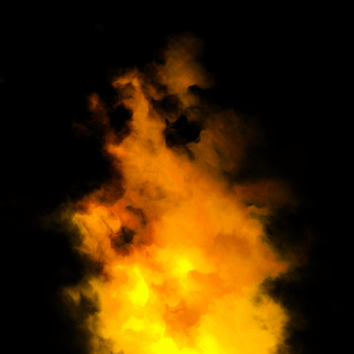
To Do Exercises
1. Recompile and run the program. You should get an animated fire effect. Press escape to quit.
2. Modify the many different shader values to see the different effects they produce. Start with scale and bias. You may also want to comment out certain parts of the fire shader to see the effect they have on the different textures.
3. Create your own noise texture and see how it changes the fire.
4. Create your own alpha texture to modify the overall shape of the flame.
5. Design your own new effect using the concept of multiple scrolling textures at different octaves and then combining them using a modified (perturbed or otherwise) noise texture.
Source Code
Source Code and Data Files: gl4linuxtut33_src.tar.gz